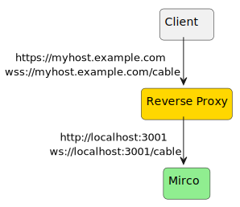

Using a reverse proxy to secure Mirco
A common approach to secure access to container applications is to use a reverse proxy. The reverse proxy terminates the HTTPS connection for one or more containers on the same host.

Mirco uses websockets, so there is a second connection that needs to be forwarded in addition to the http/s connection.
Apache 2.4
<VirtualHost *:443>
...
<Location "/">
ProxyPass http://127.0.0.1:4001/
ProxyPassReverse http://127.0.0.1:4001/
</Location>
<Location /cable>
ProxyPass ws://127.0.0.1:4001/cable
ProxyPassReverse ws://127.0.0.1:4001/cable
</Location>
<Proxy *>
Order deny,allow
Allow from all
</Proxy>
SSLEngine On
SSLCertificateKeyFile ....
SSLCertificateFile ...
...
</VirtualHost>